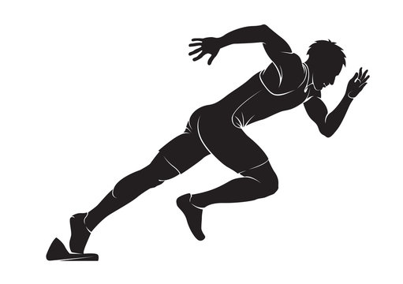
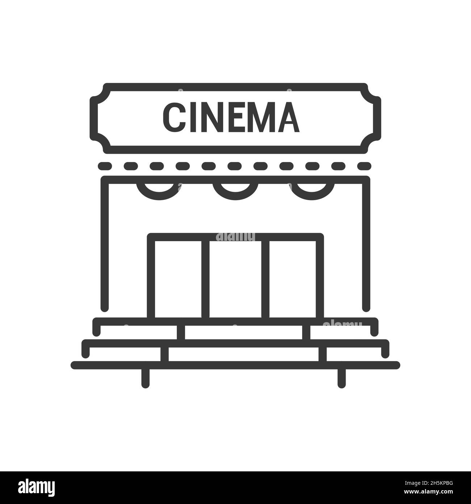
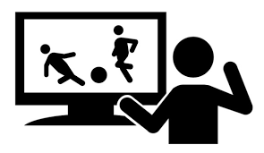

Education :
Computer Science
-
*Cairo High Institut*
- 2023 -> 2027
High School
-
*EL Tawfeqya high school*
- 2020 -> 2023
- Graduated With Honors
Skills :
-
Work Under Pressure
-
Quick Adaptation
-
Social Engineering
-
video Editing
-
Microsoft Office Suite
-
Good Communicator
-
Creativity
My Passion:
A student in the second year of computer science. I studied my field out of love, and I am the first person in my family to enter this field. I always try to learn and read about the field and look for a job in website development.
Interests:
  
Languages
- Arabic ⭐⭐⭐⭐⭐
- English ⭐⭐⭐⭐
other: